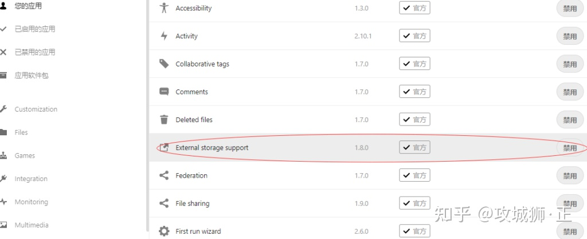
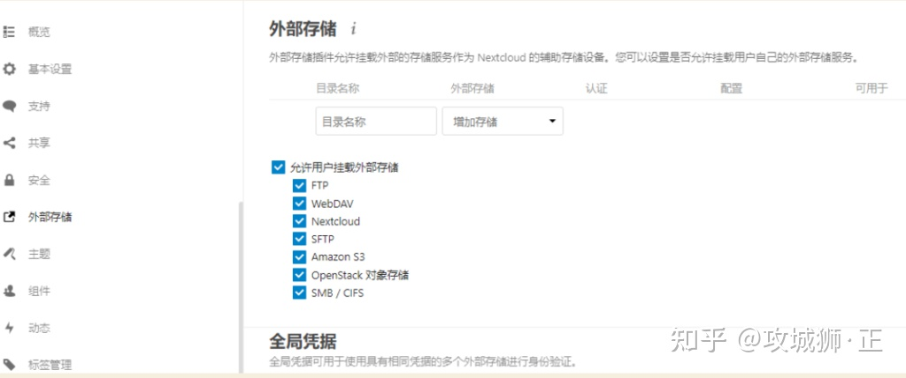
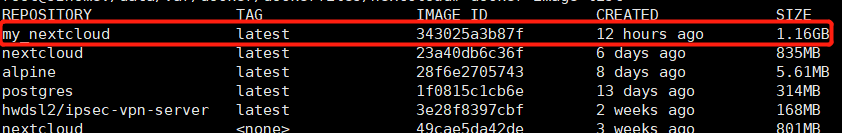
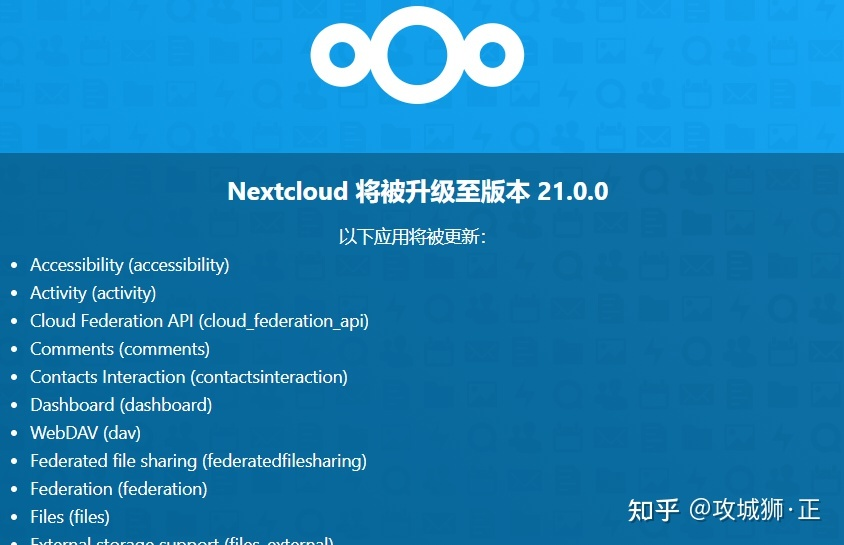
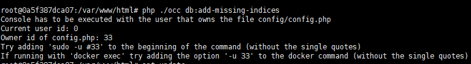

# nextcloud 安装
docker run -itd --name nextcloud -v /userdatas/Sandisk/nextcloud:/var/www/html --link mariadb -p 800:80 nextcloud |
https://zhuanlan.zhihu.com/p/353252517
# 解除文件上传时 “块大小” 的限制，
方法来源
docker exec --user www-data 容器ID php occ config:app:set files max_chunk_size --value 0 |
# 重建 nextcloud 索引
针对通过非 nextcloud 客户端（手机、PC、网页端）途径放入 nextcloud 目录的文件
docker exec -u www-data nextcloud php occ files:scan --all |
使用该命令重建索引，如果报下面错误：
Starting scan for user 1 out of 1 (xxx) | |
Home storage for user xxx not writable | |
Make sure you're running the scan command only as the user the web server runs as | |
+---------+-------+--------------+ | |
| Folders | Files | Elapsed time | | |
+---------+-------+--------------+ | |
| 0 | 0 | 00:00:00 | | |
+---------+-------+--------------+ |
那么，你需要将移入的文件（或目录）的所有这改为: 33:tape 。
chown -R 33:tape * |
# 生成缩略图
使用时会发现，Nextcloud 上传的视频不能生成缩略图。其实 Nextcloud 本身支持生成视频缩略图，需要安装 ffmpeg 并修改配置：
docker exec -it nextcloud bash | |
apt update | |
apt install ffmpeg |
停止 NextCloud 容器，再修改 /var/www/html/config/config.php 配置文件，添加：
'enable_previews' => true, | |
'enabledPreviewProviders' => | |
array ( | |
0 => 'OC\\Preview\\Image', | |
1 => 'OC\\Preview\\Movie', | |
2 => 'OC\\Preview\\TXT', | |
), |
再次启动容器即可生效。
# 支持挂载 Samba
Nextcloud 不仅是一个私有网盘，它还支持管理其他外部存储。可以把 Samba 共享，FTP，WebDAV 等挂载到目录下统一访问管理。
Nextcloud 默认是没有开启外部存储功能的，需在手动启用插件。

然后在设置里可以看到：

Docker 部署的 Nextcloud 默认是无法挂载 Samba 的，这里会显示：
需要在容器内安装 smbclient：
docker exec -it nextcloud bash | |
apt install smbclient libsmbclient-dev | |
pecl install smbclient | |
docker-php-ext-enable smbclient |
重启 Docker 服务即可。
# 自制 Docker 镜像
以上两处调整，在升级 Nextcloud 镜像后又需要重新执行一次。我们可以用原镜像为基础定制一个 Nextcloud 镜像。
新建文件 Dockerfile ，内容如下：
FROM nextcloud:latest | |
LABEL maintainer="engr-z" | |
RUN apt update && apt upgrade -y | |
RUN apt install ffmpeg smbclient libsmbclient-dev -y | |
RUN pecl install smbclient | |
RUN docker-php-ext-enable smbclient |
然后在该目录下执行：
docker build -t my_nextcloud:latest ./ |
执行完后会生成新的镜像：

我们只需要用该镜像运行即可。
Nextcloud 升级
1. 执行 docker pull nextcloud:latest 下载最新镜像，再构建自己的镜像。
2. 停止正在运行的 Nextcloud 并删除： docker stop nextcloud
3. 重新运行镜像，参数和原来一样。
通过 Web 进入 Nextcloud 就会出现：

不推荐在该界面上点击更新。因为在更新内容多的情况，尤其是第三方应用更新，时间较长，浏览器可能会超时，推荐使用 occ 更新。
occ 命令是 Nextcloud 的命令行界面，Nextcloud 管理员可以通过 occ 执行许多常见的服务器操作。命令格式：sudo -u www-data php occ <your_command>
在 Docker 中运行的 Nextcloud 执行 occ 会出现权限问题：

正确执行：
docker exec --user www-data nextcloud php occ upgrade
写这篇文章时，Nextcloud 21 刚刚发布，性能提升巨大。我自己也一直用 Nextcloud 管理家庭的照片和视频，非常 Nice。